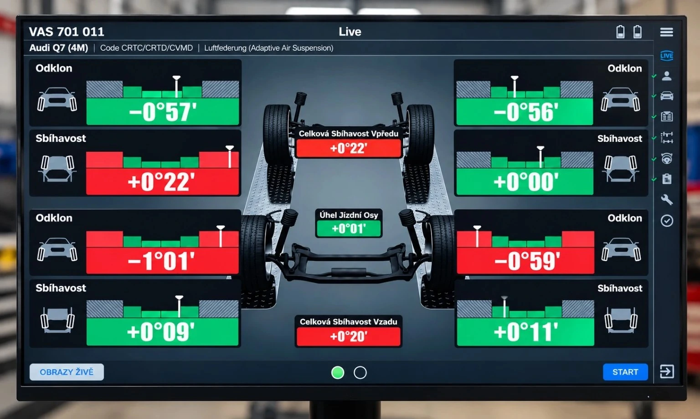

Căn chỉnh bánh xe

J&S servis ở Statenice đã chuyên bảo dưỡng các xe Volkswagen, Audi, Škoda, SEAT và CUPRA kể từ 1994.
Chúng tôi thực hiện phép đo 3D chính xác và điều chỉnh độ thẳng hàng của bánh xe, kiểm tra khung gầm cũng như chẩn đoán hệ thống phanh và giảm chấn bằng thiết bị Beissbarth chuyên nghiệp.
- Cân chỉnh góc đặt bánh xe 3D bằng Beissbarth VAS 701 011
- Chẩn đoán khung xe trên dây chuyền thử nghiệm
- Chuyên về xe của Tập đoàn VW kể từ 1994
Căn chỉnh bánh xe 3D – Beissbarth VAS 701 011


- Đo căn chỉnh bốn bánh.
- Kiểm tra và điều chỉnh độ chụm trong phạm vi kết cấu của xe.
- Đo góc camber, góc caster và các thông số hình học khác của bánh xe.
- Kiểm tra hình học sau khi sửa chữa khung xe, thay thế các bộ phận treo hoặc hư hỏng xe.
- Đánh giá nguyên nhân gây mòn lốp không đều, đánh lái sai và xe mất ổn định.
Chúng tôi sử dụng hệ thống thước đo Beissbarth VAS 701 011 với công nghệ Q. Lign và kẹp Q. Grip giúp giảm thiểu nguy cơ hư hỏng vành bánh xe.
Chẩn đoán gầm xe – dây chuyền kiểm tra Beissbarth
- Đo lực phanh và sự khác biệt của chúng trên từng bánh xe.
- Kiểm tra hiệu quả của phanh chính và phanh đỗ.
- Kiểm tra tác dụng giảm xóc và tình trạng hệ thống treo.
- Kiểm tra khe hở trên hệ thống treo bánh xe và trục xe.
- Đánh giá tình trạng kỹ thuật của khung xe trong phạm vi khả năng của đường thử.
Hệ thống hỗ trợ lái và các bước thích nghi
Sau khi điều chỉnh hình học bánh xe, chúng tôi đánh giá theo yêu cầu của nhà sản xuất xem các hệ thống liên quan có cần thiết lập cơ bản và radar hoặc camera có cần hiệu chuẩn hay không. Các chức năng chẩn đoán được thực hiện bằng hệ thống ODIS theo đúng xe cụ thể.
Hiệu chỉnh hệ thống hỗ trợ người lái không được bao gồm trong giá căn chỉnh bánh xe cơ bản.
Giá dịch vụ
Giá bao gồm đo lường và điều chỉnh tiêu chuẩn trong giới hạn thiết kế của xe. Việc sửa chữa hệ thống treo, chẩn đoán trên dây chuyền kiểm tra, các thủ tục chẩn đoán và điều chỉnh ODIS và hiệu chuẩn hệ thống hỗ trợ lái xe được tính riêng theo thỏa thuận với khách hàng.
Chúng tôi làm việc theo quy trình bảo dưỡng của nhà sản xuất và có tính đến thiết kế cũng như tình trạng kỹ thuật của từng loại xe cụ thể.
Trước khi đặt lịch
Hãy trao đổi về việc kiểm tra khi lốp mòn không đều, xe thay đổi khả năng giữ hướng hoặc sau khi sửa hệ thống treo. Chỉ riêng triệu chứng chưa chứng minh nguyên nhân là góc đặt bánh xe; trước hết cần xem xét tình trạng lốp và gầm xe.